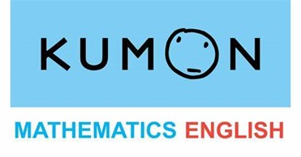

Experience
Pizza Hut Waiter: 2018 – 2020
For two years, I was part of the crew and served lunch and dinner to 50-100 customers per shift at a national chain restaurant Memorized over 30 menu items and rotating specials in order to give customized recommendations to guests Warmly greeted new and returning customers and developed relationships resulting in customer loyalty.

Assistant Teacher: 2021 – 2022
Assistant Teacher at Kumon Centre. One of my jobs is be a multi-tasking person. I also guide and teaching the kids and students as I'm major in mathematics and English pre-school and primary syllabus.